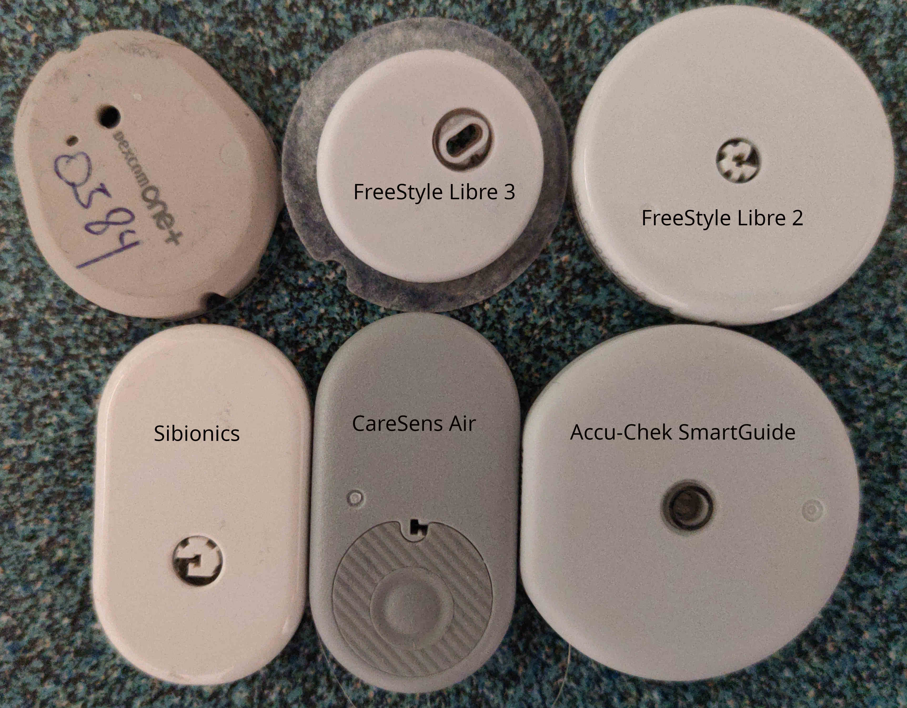
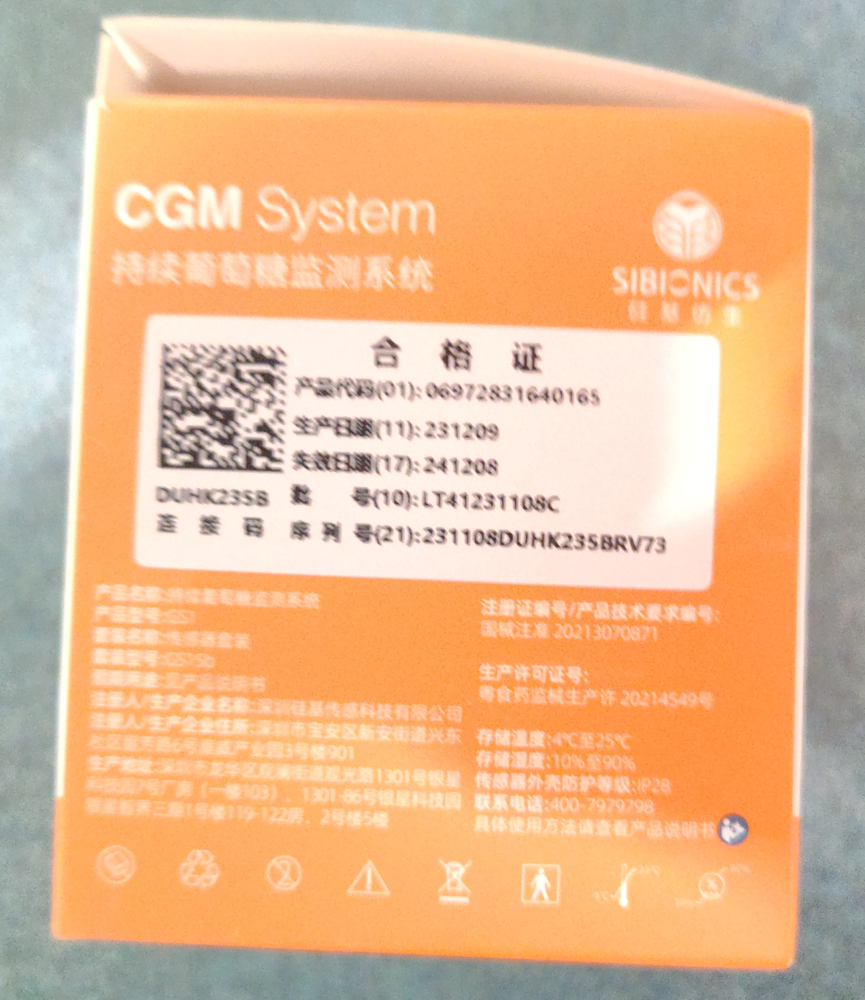
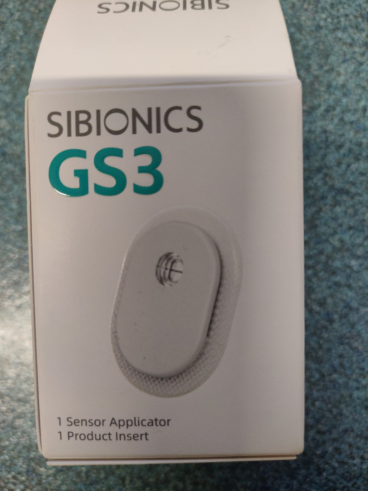
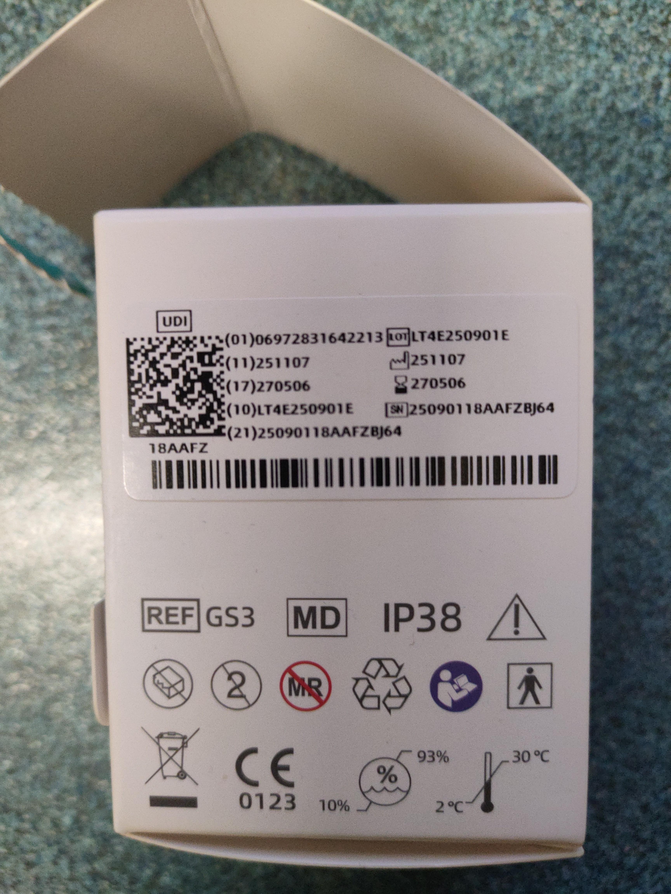
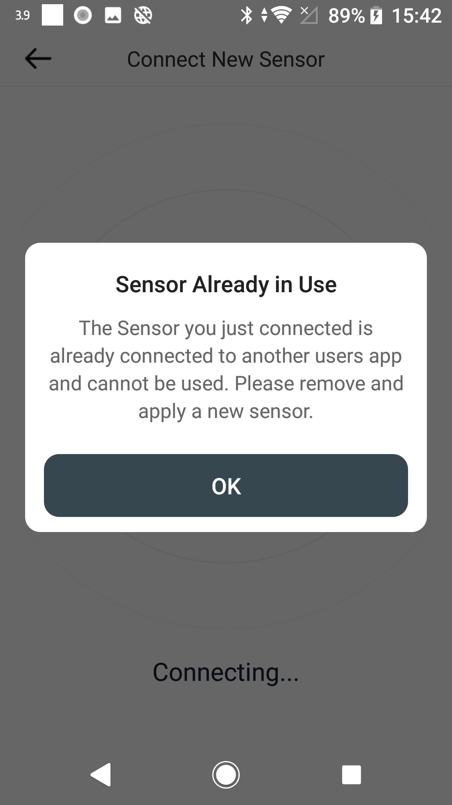
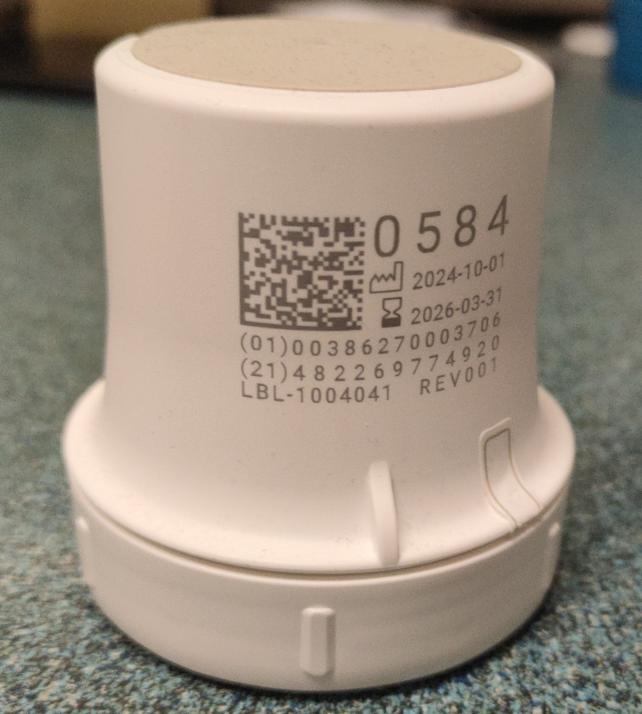
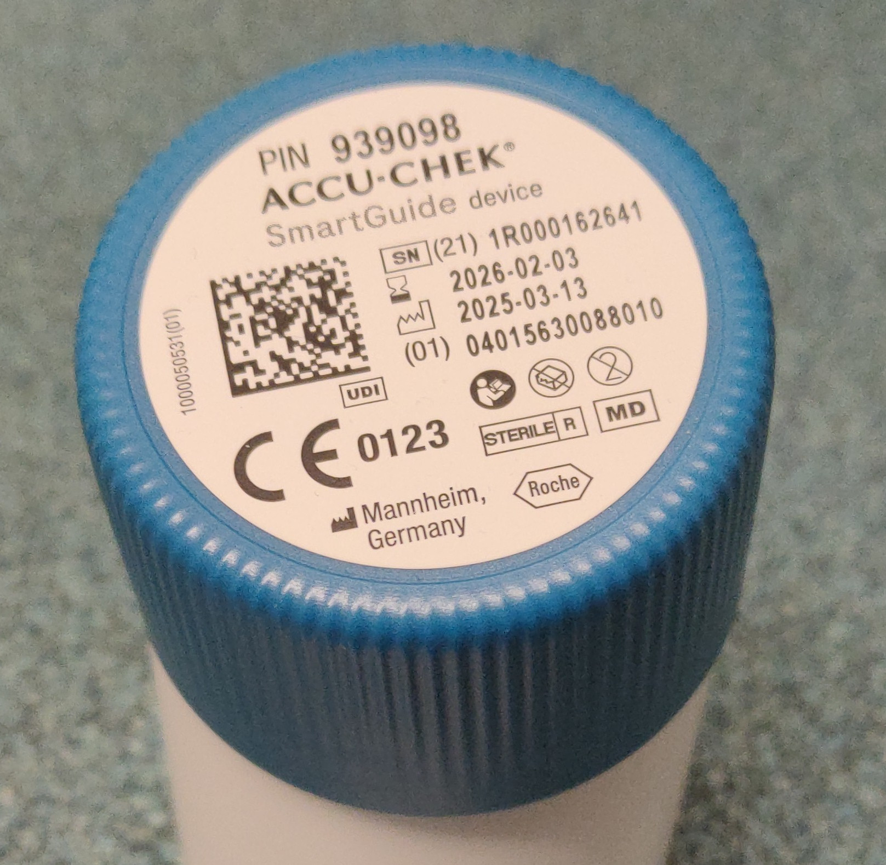
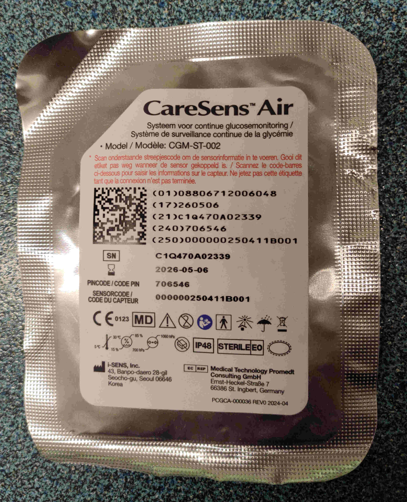
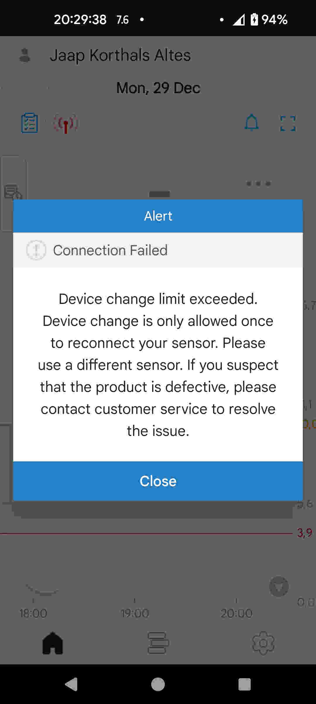
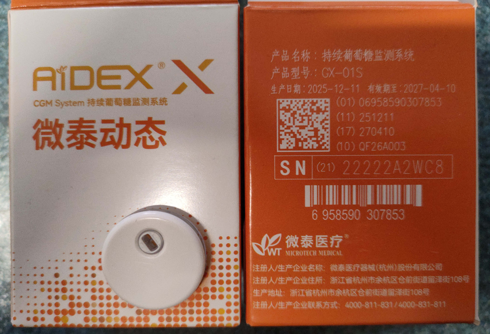

How to use a sensor with Juggluco? In all cases you need to force stop the apps that previous connected with the sensor and somehow stop the Freestyle Reader.
Scan the sensor at least two times by holding the NFC unit in the phone against the sensor.
The same applies to Libre 2+. Juggluco can be used and can activate all Libre 2 and Libre 2+ sensors.
Goto left menu→Settings→Exchange data→Libreview. If you want to use a sensor with both Abbotts Libre 3 app and Juggluco, you need to enter the same account information as in Abbotts Libre 3 app. Here after you need to press “Get Account ID”→”From Libreview”.
Juggluco can only take over a sensor that was activated with Abbotts Libre 3 app (https://play.google.com/store/apps/details?id=com.freestylelibre3.app.us) that at that time was associated with the same Libreview account as entered in Juggluco.
Juggluco can not take over a sensor activated with FreeStyle Libre 3 reader or the Unified Libre app (https://play.google.com/store/apps/details?id=com.abbott.adc.freestyle.libre.us).
If you only want to use the sensor with Juggluco, you can check “manual” under “Get Account ID” and enter an arbitrary number and activate the sensor with Juggluco.
If you later want to be able to later use Abbotts Libre 3 app, you need to receive the Account ID from Libreview before activating the sensor.
See: https://www.juggluco.nl/Juggluco/libre3/
The same applies to Libre 3+.

To use a Sibionics sensor with Juggluco you need to scan the data matrix on the sensor package with left menu→Photo. Thereafter, you have to specify what sensor you are using: EU, Hematonix, Chinese or Sibionics 2/Split/Light. The application ID of the official app for that sensor is also displayed.



Juggluco 10.9.0 can be used with Sibionics GS3 sensors. Juggluco receives only one values per 5 minutes from the sensor. The sensor does send every minute a value, but they are every time 5 times the same value. For GS1 sensor this was the same for the end processed values, but raw values were also available and Juggluco displayed a different value every minute in contrast to Sibionics own app. For GS3 sensor Juggluco only has the end processed values.
GS3 sensor have another extra: like Libre 3, they bind the sensor to an account ID. This account ID is send to the sensor and the sensor does not work when it is different from before. Because of that Juggluco asks users to enter their Sibionics e-mail address and password number to retrieve it from the server of Sibionics.
To use a Sibionics sensor with Juggluco you can scan the data matrix on the package or scan the sensor via NFC. After scanning you are asked to enter this account information.
See also:
https://www.juggluco.nl/Jugglucohelp/SibionicsServer.html

Scan the data matrix on the applicator with left menu→Photo. Keep the display on so that you don’t miss the opportunity to agree to pair the sensor. Otherwise, you have to wait another 5 minutes.

Scan the data matrix on the blue cap of the applicator. When asked, enter the PIN code also displayed on the blue cap.
It is uncertain whether you can use an Accu-Chek SmartGuide sensor with Juggluco that wasn’t already used with the official app.

To use a CareSens Air sensor with Juggluco scan the data matrix on the inner package with left menu→Photo.
A difficulty with CareSense Air sensors is that you can change only one time the device (phone or watch) to which the sensor is connected. When you switch back it doesn’t work. It does work again when you switch back to that second device.
So if you connected the sensor to a phone you can best first connect the sensor to Juggluco on that same phone. But when you start a sensor with Juggluco and you want to connect the sensor to a WearOS watch, you can better immediately set left menu→Watch→WearOS config→Direct sensor-watch connection. If you don’t like it, you can than always switch to connecting to the phone.

The official app has the strange feature that values are modified afterward. At a particular time it receives a glucose measurement and shows that value, but every 5 minutes thereafter (for 30 minutes) besides showing a new value, it changes this previous glucose value. You can see it yourself by saving the glucose values every 5 minutes in the official app.
Juggluco places the immediately shown value in the stream values and the afterward modified values in the History values. So by looking at the Stream values, you can see what the value was at the moment itself. By looking at the History values, you see the value as modified afterward.
In my 8-day experience with this sensor, the glucose values were nearly as accurate as Libre3. The main disadvantage is the glue used to attach the sensor: It doesn’t hold for more than 8 days and after the sensor fell off, no glue remained attached to the skin as is the case with other sensors. They have tried to solve this issue by supplying a large sticker that can be attached on top of the sensor and the surrounding skin, but who will want to use that?

Juggluco 10.7.0 and later can connect via Bluetooth with Aidex X sensors. If the sensor was connected to another phone, you first need to unpair the sensor on that phone. As with all sensors, you need to force stop the app previously connected with the sensor. Thereafter, you need to scan the data matrix on the package of the Aidex X sensor with left menu→Photo. As an alternative there is also the option to go to left menu→Exchange data→Glucose Meters→Find devices and check “Aidex X” and wait until the correct device name is visible. You need to compare the part of the shown device name after “AiDEX X-” with the number on the package after SN. If you accidentally add the wrong sensor, you can terminate it and start again. You need to agree to pair the sensor.
Aidex X sensors can, as all sensors, also directly connect with WearOS watches and as with all sensors you can transfer the sensor between watch and phone with left menu→Watch→WearOS config “Direct sensor- phone/watch connection”. If you use that interface the Juggluco that is directly connected with the sensor will send an unpair command to the sensor so that the other device can connect with it.
Aidex X sensors have about a millimeter larger diameter than Libre 3 sensors and are about 50% thicker. They last 15 days and not a minute longer, but Juggluco contains a Clear button. Pressing this button wipes all glucose values from the sensor making it possible to restart the sensor like a new one. The glucose values already received by Juggluco will remain there. This way you can use a sensor longer, but this is only for testing purposes. The glucose values received from the sensor are of little value. When for example the Libre 3 sensor gives 9.4 mmol/L, the Aidex X sensor after the end data of the sensor gives 3.7 mmol/L.
If you don’t use Clear, all every minute data from the start of the sensor is saved on the sensor and can be retrieved even after the sensor stops recording new glucose values.
Juggluco 10.7.2 and higher can also be used with LinX sensors. Everything what is said about Aidex X sensors, except for the name, also applies to LinX sensors.